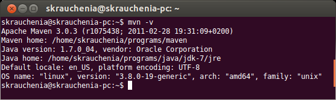

Maven
Введение
Качество кода
Очень! Очень! Очень! важно писать аккуратно и как все, но за этим сложно следить.
И если об этом постоянно думать, то времени на написание приложения совсем не остается. Что делать?
CheckStyle
Проверка кода на соответствие общим правилам написания, например:
- все управляющие конструкции должны иметь { ... }
- длина строки не должна быть больше 120 символов
- соглашение об именовании
- очень большие (> 20 строк) или очень сложные методы
- табулирование и пробелы
FindBugs
Поиск распростроненных ошибок в Java приложениях. Например:
- не верно закрывается поток или соединение к базе
- переопределен только один из методов hashСode, equals
- вызов статического Calendar, DateFormat
- исходя из других проверок может быть установленна что перемення null/not-null
FindBugs
Хотелось бы не наступать на одни и те же грабли дважды.
- Когда-то FindBugs обнаружил ошибку в модели памяти Java
- Более 350 проверок
- Ошибки
- Оптимизации
- Дурной тон программирования
- Ошибки многопоточности
Качество кода
В процессе работы, мы постоянно видоизменяем код, в результате чего появляется:
- мертвый код
- слишком сложный код
- дублирущийся код
Почему это все так важно?
Потому что, 80% рабочего времени программист читает код
Метод который не вмещается на экран (выпадает из области видимости) на 2 строки отлаживается в 2 раза дольше чем тот кторый вмещается
Тестирование
Как вы работаете?

Как я работаю?

В чем преимущество?
Скорость!- Вы = Написать код + 50 раз запустить приложение + исправления и отладка
- Я = Написать код + написать тесты + исправления и отладка
В чем преимущество?
Надежность!- Вы - проверяете только то, что в данный момент пишите.
- Тесты - проверяют всё и всегда
Покрытие
- Показывает вам, что вы проверили и в чем вы можете быть уверены.
- Указывает на потенциально не используюемый код.
Все вместе для Web
- Compile
- CheckStyle
- FindBugs
- Tests
И только если все хорошо:
- Package war
- Deploy to tomcat
- Run tomcat
Как со всем этим быть?
Maven
Это Command Line инструмент сборки, который конфигурируется с помощью xml
- облегчает процесс сборки
- облегчает управление жизненным циклом проекта
- унифицирует структуру проекта
- облегчает управление зависимостями
Принципы мавера
- Project oriented
- Convention over Configuration
- Dependency management
- Extensible through plug-ins
- Reuse through centralized repositories
Установка
- Скачать http://ftp.byfly.by/pub/apache.org/maven/maven-3/3.0.5/binaries/apache-maven-3.0.5-bin.zip
- Распаковать куда удобно
Сделать доступным из консоли
Добавить переменную среды JAVA_HOME, указывающую на директорию с JDK Добавить <mavenDir>/bin в PATHДобавить- linux: export PATH=<mavenDir>/bin:$PATH
- win: set PATH=%PATH%;<mavenDir>/bin
Правильно ли я все сделал?
> mvn -v

Легко создавать новый проект
> mvn archetype:generate -DarchetypeArtifactId=maven-archetype-webapp -DgroupId=com.mycompany.project -DartifactId=my-webapp

Структура проекта

Локальный репозиторий
Все зависимости, скаченные ранее, размещаются в локальном репозитории.Находится в <USER_HOME>/.m2/repository
Настройка proxy :)
Добавьте следующий код в конфигурационный файл мавена (<mavenDir>/conf/settings.xml)
<proxies>
<proxy>
<active>true</active>
<protocol>http</protocol>
<host>proxy.somewhere.com</host>
<port>8080</port>
<username>proxyuser</username>
<password>somepassword</password>
<nonProxyHosts>*.google.com|ibiblio.org</nonProxyHosts>
</proxy>
</proxies>
Maven: фазы сборки
- validate
- process-sources
- compile
- process-test-sources
- test-compile
- test
- package
- integration-test
- install / deploy
Key maven commands
- clean
- test
- package
- install
> mvn clean install
Плагины:
С помощью плагинов можно вклиниться в любую фазу сборки и сделать что-то сумасшедшее
<build>
<plugins>
<plugin>
...
</plugin>
</plugins>
</build>
Checkstyle plugin configuration example
<plugin>
<groupId>org.apache.maven.plugins</groupId>
<artifactId>maven-checkstyle-plugin</artifactId>
<version>2.9.1</version>
<configuration>
<consoleOutput>true</consoleOutput>
<enableRulesSummary>false</enableRulesSummary>
<configLocation>checkstyle.xml</configLocation>
<suppressionsLocation>${basedir}/checkstyle-suppression.xml</suppressionsLocation>
</configuration>
<executions>
<execution>
<phase>process-sources</phase>
<goals>
<goal>check</goal>
</goals>
</execution>
</executions>
</plugin>
Dependencies
С помощью maven можно легко управлять зависимостями
<dependencies>
<dependency>
<groupId>com.google.guava</groupId>
<artifactId>guava</artifactId>
<version>14.0</version>
</dependency>
</dependencies>
Dependencies
Зависимости могут тянуть за собой другие зависимости. Их можно исключить
<dependency>
<groupId>org.slf4j</groupId>
<artifactId>slf4j-simple</artifactId>
<version>1.6.4</version>
<exclusions>
<exclusion>
<groupId>org.slf4j</groupId>
<artifactId>slf4j-api</artifactId>
</exclusion>
</exclusions>
</dependency>
Dependency scope
Можно ограничить транзитивность зависимости с помощью scopeScopes:
- compile - scope по умолчанию. Добавляет библиотеку ко всем classpath проекта
- provided - используется при компиляции и тестировании, но предполагается, что библиотека поставляется JDK или веб-контейнером
- test - такая зависимость доступна при тестировании проекта
Профили (1/5)
Профили позволяют кастомизировать сборкуПрофили (2/5)
Активация этого профиля происходит исходя из ОС
<profiles>
<profile>
<activation>
<os>
<name>Windows XP</name>
<family>Windows</family>
<arch>x86</arch>
<version>5.1.2600</version>
</os>
</activation>
...
</profile>
</profiles>
Профили (3/5)
Этот профиль активируется, если системная переменная debug задана с любым значением
<profile>
<activation>
<property>
<name>debug</name>
</property>
</activation>
...
</profile>
Профили (4/5)
Профиль включится, если системная переменная environment имеет значение test
<profile>
<activation>
<property>
<name>environment</name>
<value>test</value>
</property>
</activation>
...
</profile>
> mvn clean install -Denvironment=test
Профили (5/5)
<profile>
<id>quick-and-dirty</id>
<properties>
<maven.test.skip>true</maven.test.skip>
<checkstyle.skip>true</checkstyle.skip>
<findbugs.skip>true</findbugs.skip>
</properties>
</profile>
> mvn install -P quick-and-dirty